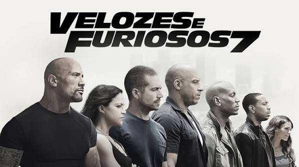

Após os acontecimentos anteriores, a equipe de Dominic Toretto enfrenta um novo inimigo em busca de vingança. Entre perseguições, carros velozes e muita ação, o grupo precisa se unir para proteger sua família e seus amigos.
Gênero: Ação, Aventura e Crime
Ano: 2015
Duração: 2h 17min
Avaliação: 7,8 / 10
• Vin Diesel como Dominic Toretto
• Paul Walker como Brian O'Conner
• Dwayne Johnson como Luke Hobbs
• Jason Statham como Deckard Shaw
Velozes & Furiosos 7 combina carros, corridas, perseguições e muita ação, enquanto mostra a importância da amizade e da família.